| Sistemas Microinformáticos y Redes |
|---|
| Seguridad y Alta Disponibilidad |
| Unidad 1 – Introducción a la Seguridad y Alta Disponibilidad |
| Actividad 2 - Análisis de puertos |
| Nombre y Apellidos | Marc Brines Bañuls |
|---|---|
| Curso | 2 ASIX |
Actividad 2 – Análisis de puertos con nmap
Enunciado
- Instala una máquina virtual con Xubuntu o alguna distro similar.
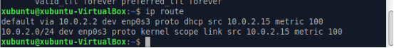
Fig 1: Comprovació de la màquina en funcionament.
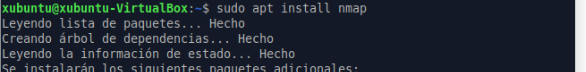
Fig 2: Intalació de nmap.
- Busca una aplicación (diferente de nmap) para el análisis de vulnerabilidades i comprueba si se puede instalar.
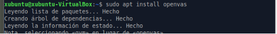
Fig 3: Instale el openvas (ferramenta per a analisar vulnerabilitats)
Si que la he pogut instal·lar, però m’ha tardat prou de temps en quan no
deuria de ser així.
- Utilizando la herramienta nmap, realiza escanea los puertos que tiene abiertos tu ordenador
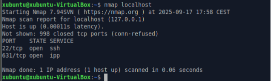
Fig 4: Escaneig del meu ordenador
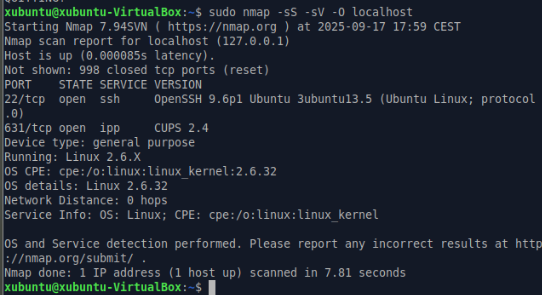
Fig 5: Escaneig més detallat del meu ordenador.
- Instala algún servicio, por ejemplo Apache, y comprueba con nmap que tienes el puerto referente a ese servicio abierto y haz que te muestre la versión utilizada.
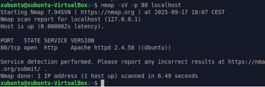
Fig 6: Verificació del port 80 obert.
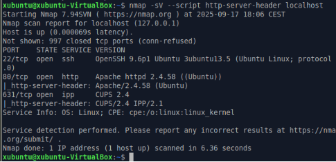
Fig 7: Versió d’Apache
- Utilizando la herramienta nmap, realiza escanea los puertos que tiene abiertos el ordenador de un/una compañero/a
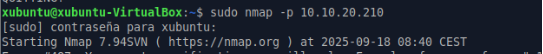
Fig 8: Nmap a companyer ( parat per si passava algo a l’istitut )
- Realiza un escaneo de los puertos de todos los equipos de la red.
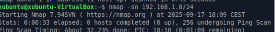
Fig 9: Escaneig dels ports ( l’he parat per el que puguera passar. Fet desde casa)
- Realiza un escaneo de puerto de una página web (por ejemplo, marca.com)
¿Qué puertos tiene abiertos?
NO
- ¿Puedes averiguar las MAC de todos los equipos de la red con nmap?
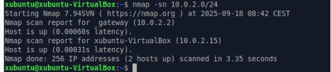
Fig 11: Comando per a fer dit ejercici.
- ¿Puedes averiguar las IP de todos los equipos de la red con nmap?
Amb el comandament de la foto anterior ( fig 11 ), hi podem resoldre aquest
ejercici, no ho pose en pràctica ja que estic treballant sobre la red de l’istitut.
- Utiliza la herramienta Legion para realizar el escaneo de tu PC. ¿Qué datos obtienes?
( Faig explicació perque no he fet captures de l’instalació )
Actualitzem y descarreguem els que ens fa falta, seguidament clonem el
repositori de git, agafant el https de dins de la web de git. Entrem a la carpeta on sens descarrega i executem com un script el legion.
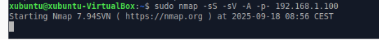
- ¿Tiene alguna vulnerabilidad CVE?
- Utiliza nmap para ver la vulnerabilidades de tu ordenador ¿Tiene alguna CVE?
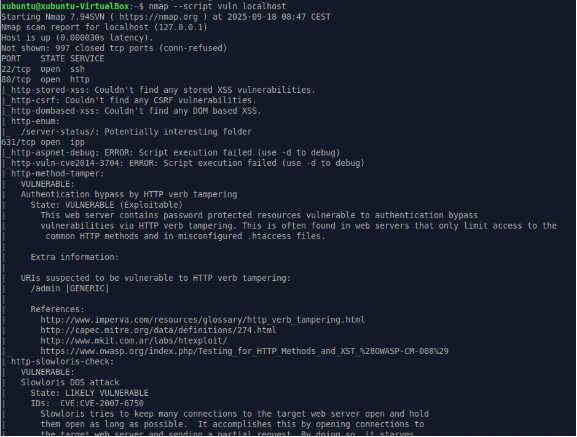
Fig 13: Hi busquem vulnerabilitats al nostre ordenador.
- Investiga ¿Qué es https://www.shodan.io/ ?
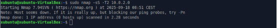
Página 1 de 1**